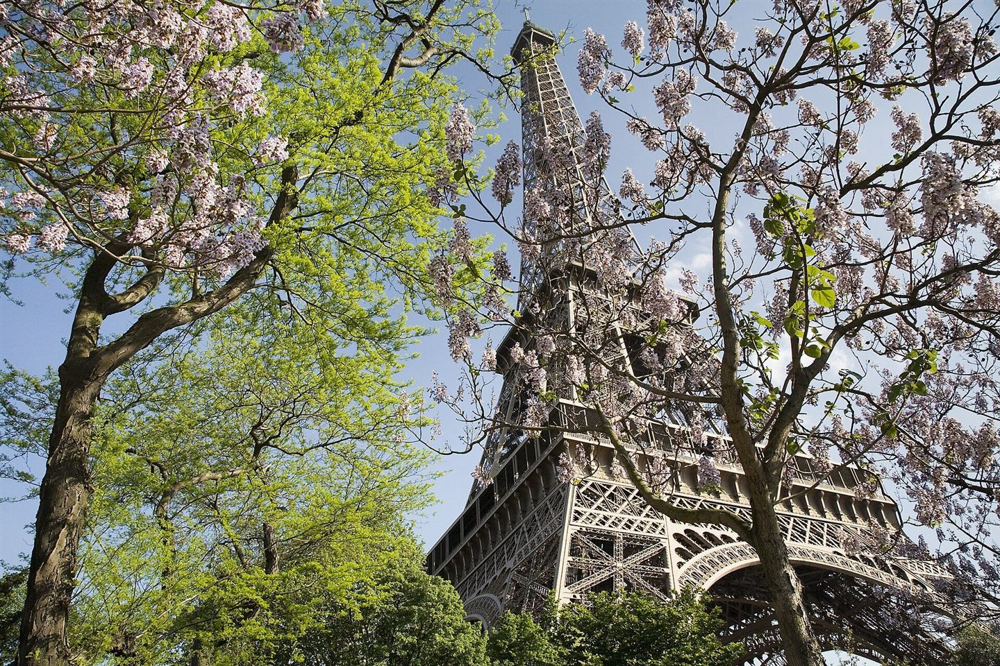
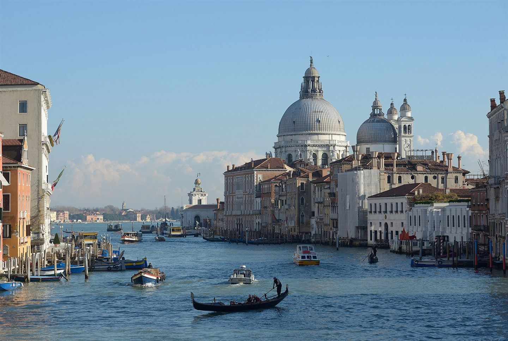
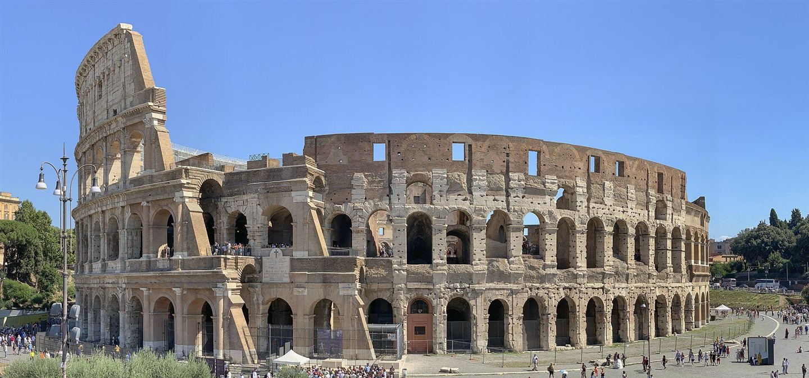

Un cuaderno abierto al mundo
Francia / Italia / Brasil
La próxima historia empieza afuera
Hay mucho mundo
por conocer.
Lugares para caminar, sabores para descubrir e ideas para empezar a organizar tu próximo viaje.
Explorar destinos
BITÁCORA VIAJERA
Para quienes disfrutan tanto imaginar un viaje como prepararlo.
Elegí tu próximo capítulo
¿A dónde vamos?
Tres países para empezar. Una guía para mirar cada destino con un poco más de curiosidad.

Europa · Roma, Florencia y Venecia
Italia
Plazas, arte y sabores que cambian en cada región.
Explorar la guía
América del Sur · Río de Janeiro
Brasil
Entre la ciudad, el verde y el ritmo del mar.
Explorar la guíaDe la inspiración al itinerario
Un viaje, muchas formas
de descubrirlo.
En cada guía reunimos tres puntos de partida para que armes tu propio recorrido.
Lugares para conocer
Monumentos, barrios y paisajes para empezar a dibujar tu ruta.
Un paseo por París ↗Dónde hospedarse
Tipos de alojamiento y detalles que conviene revisar antes de reservar.
Pensá tu estadía ↗Gastronomía
Platos tradicionales y pequeñas pistas para acercarte a la cocina local.
Descubrí nuevos sabores ↗